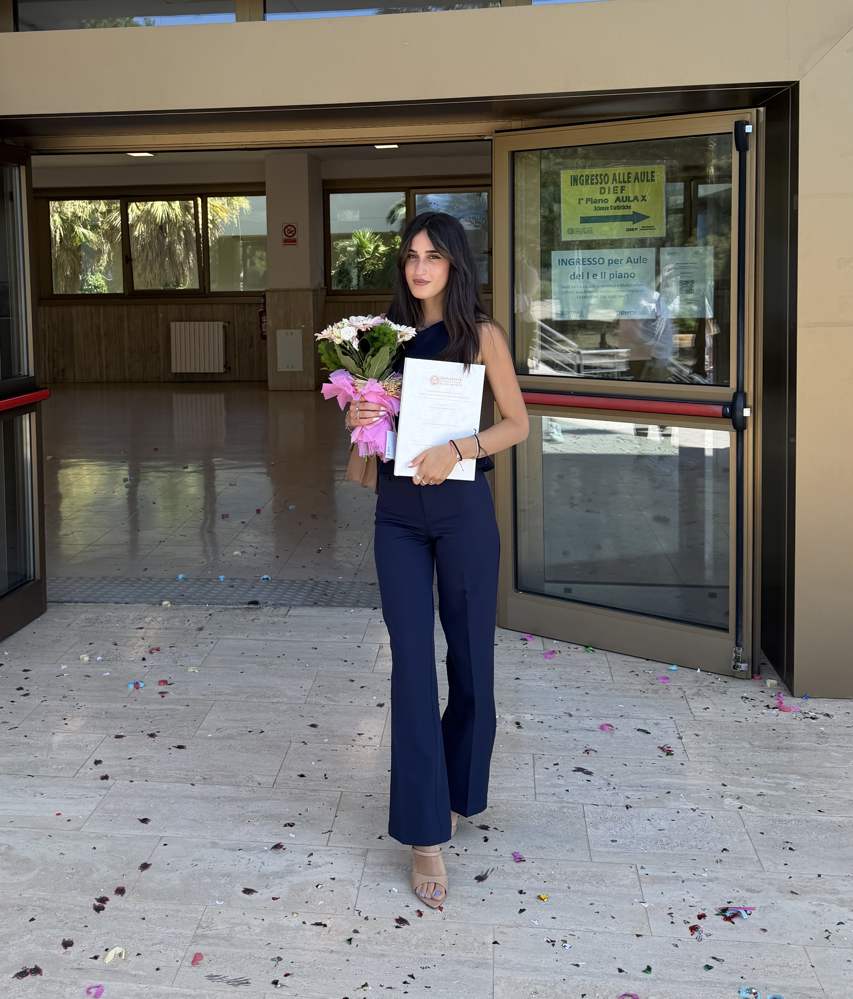

Da oggi il mondo ti chiama in un altro modo.

Metti qui la foto
(laurea.heic)
Questo sorriso, oggi, vale più di ogni voto in pagella.
Per l'impegno di ogni giorno, la costanza nelle difficoltà e la luce che ci ha messo in ogni pagina.
Il lillà fiorisce a primavera e dura poco, ma nel poco tempo che ha, riempie tutto di profumo. Per gli antichi era il fiore dei nuovi inizi. Mi è sembrato perfetto per te, oggi.
Ti ho vista studiare fino a tardi, ti ho vista stressata prima degli esami, ti ho vista piangere e poi ridere lo stesso giorno. E oggi ci sei arrivata. Ce l'hai fatta davvero.
Sono orgoglioso di te, tantissimo, più di quanto riesca a dirti a voce senza sembrare imbarazzato. Sono fiero di come sei, di quanto ti impegni, di quanto sei tosta anche quando pensi di non esserlo.
Io sono qui, sono tuo, e continuerò ad esserlo per tutto quello che viene dopo. Da qui si parte, insieme.
Ti amo.